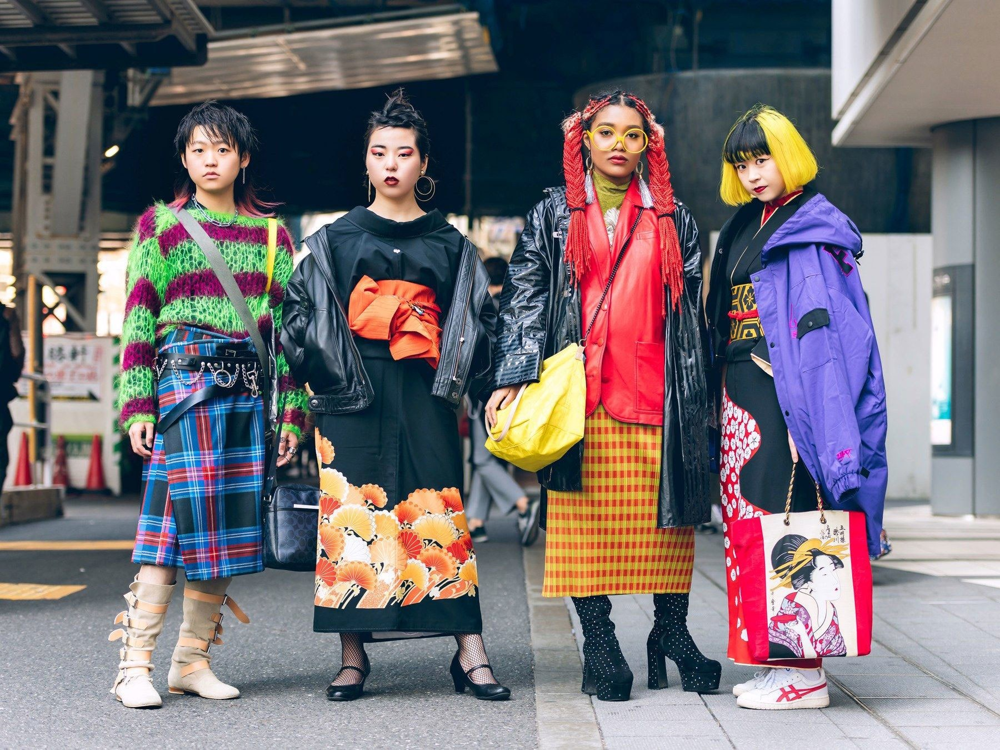

 Tokijo mados savaitė atšaukta! Nenusiminkite, jums siūlome 5 japoniško gatvės stiliaus instagram puslapius Kovo 28d, 2020 Dėl koronaviruso pandemijos buvo atšaukta daugybė renginių, tarp jų ir Tokijuje turėjusi vykti mados savitė.
Kaip mados pasaulis kovoja su koronaviruso pandemija? Kaip prisideda aukštosios mados įmonės? Kovo 28d, 2020 Nuo pasaulinio kronaviruso protrūkio 2020m. pradžioje, įmonės kaip „Prada“ , „Gucci“ , „Hugo Boss“ stojo į kovą su virusu.